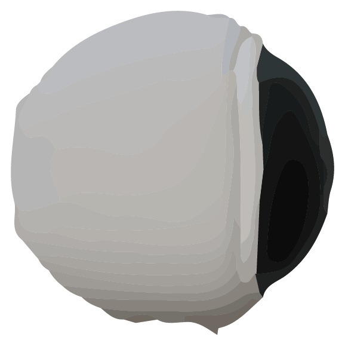
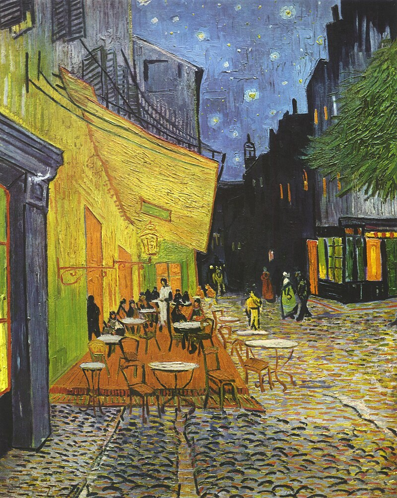

Ce projet consistait à imaginer un univers de jeu et un gameplay basé sur le silence.
Dans Records of Hope, le joueur incarne un astronaute coincé dans une station spatiale qui dot récolter des morceaux du Golden Record
afin de lutter contre l'isolement. En effet, si sa barre de santé mentale baisse trop, le joueur est poursuivi par un ennemi nommé le Vide,
caractérisé par l'absence de sons. Pour la direction artistique, je me suis inspiré des tableaux de Vincent Van Gogh, maître de l'impressionnisme,
afin de donner une ambiance surréaliste au jeu.

